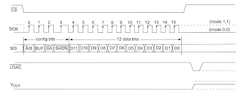
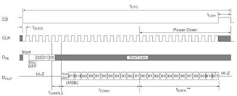
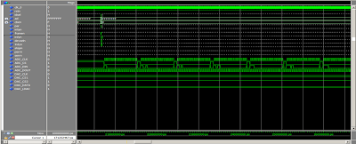
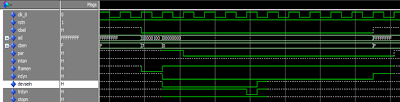
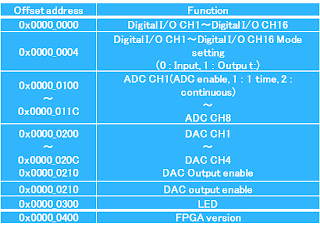

ในตอนนี้จะเป็นการออกแบบ FPGA สำหรับ PCI card โดยจะใช้ NIOS2(Soft core CPU) ในการติดต่อกับส่วนต่างๆ
1. PCI interface
มีทางเลือกอยู่ 2 ทางคือ:
- ใช้ IP core ของ Altera
- เขียน PCI interface เองด้วย VHDL หรือ Verilog
ผมเลือกที่จะเขียนเอง เพราะว่าการใช้ IP core ของ Altera นั้นมีค่าใช้จ่าย และผมต้องการเรียนรู้การทำงานของ PCI bus ด้วยตัวเอง
ผมได้ VHDL code สำหรับ PCI interface มาจากหนังสือ http://www.cqpub.co.jp/hanbai/books/33/33361.htm
2. Peripheral interface
DAC
MCP4922 4 channel
ADC
MCP3208 8 channel
DIO
ออกแบบ output High/Low
3. Simulation
ทำการ simulation เพื่อทดสอบการทำงานของ PCI interface และ peripheral interface
 4. Memory map
เพื่อให้ NIOS2 สามารถติดต่อกับ peripheral ต่างๆได้ จะต้องมีการกำหนด memory map ขึ้นมา
